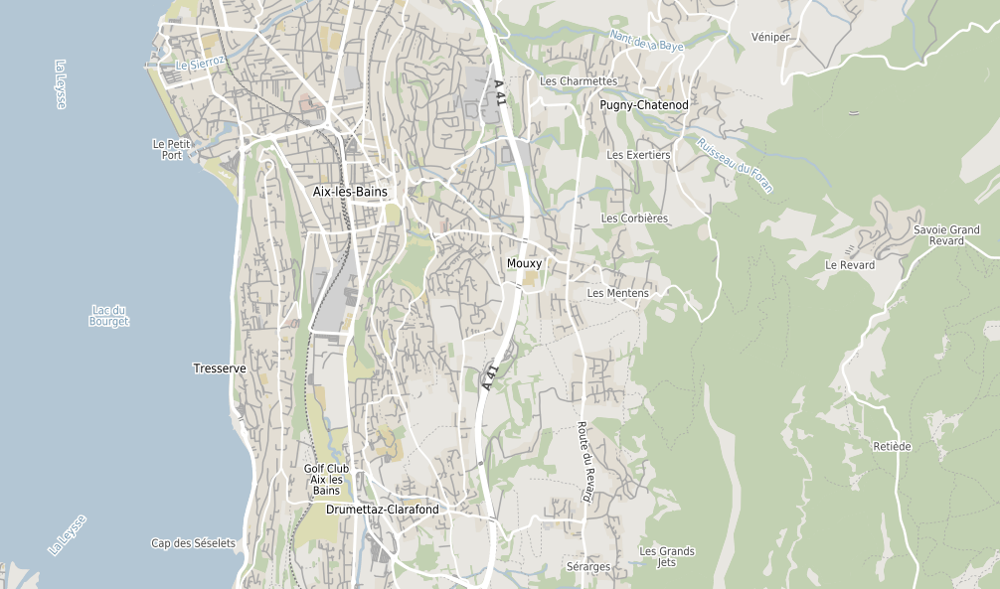
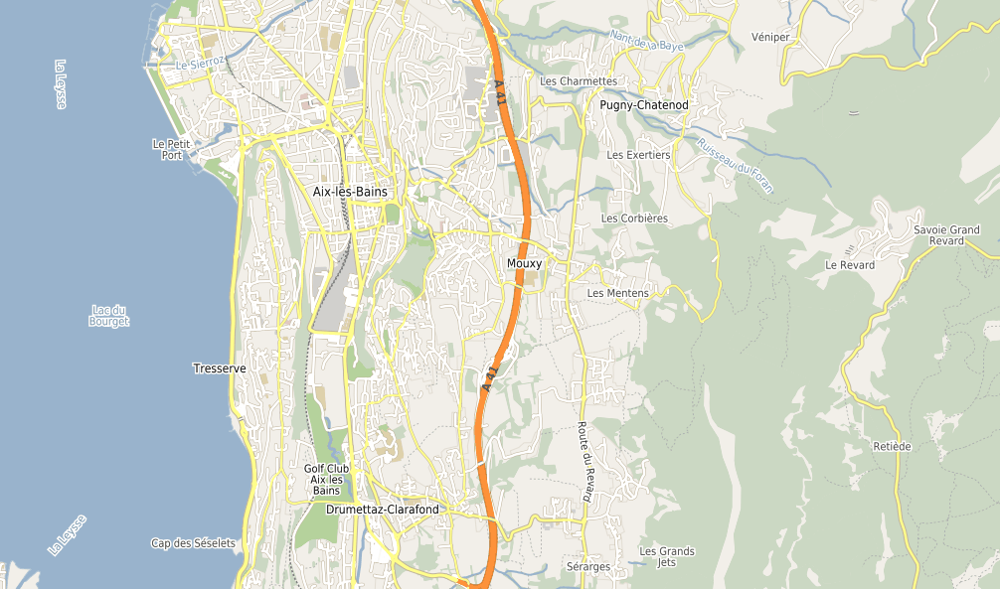
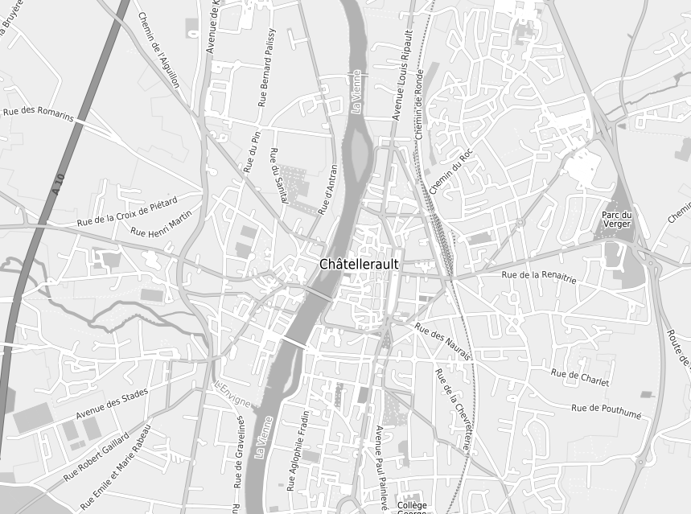
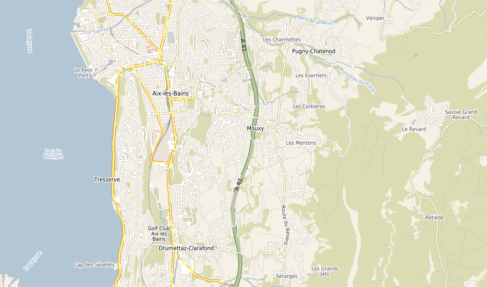
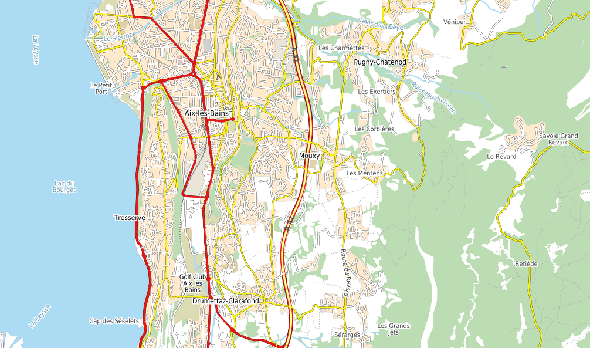

Tweaking Map Styles¶
- Author:
Nicolas Ribot
This page contains information about the way to tweak map styles using the MapServer/basemaps project.
Prior to using this version of MapServer/basemaps, you have to import OSM map data into a postgis database using the imposm tool. See Installation to know how to set up easily your project.
Generating a mapfile¶
The mapfile called osm-_STYLE_.map is generated by executing the ‘make’ command based on the settings at the top of the Makefile.
Makefile¶
The following parameters are configurable at the top of the Makefile:
OSM_PREFIX: the prefix of the table names in the postgis database
OSM_SRID: EPSG code of the mapfile’s output projection (common values are 4326 for lon,lat and 900913 for the Google Mercator projection)
OSM_UNITS: MapServer units corresponding to the OSM_SRID (common values: DD or METERS)
OSM_DB_CONNECTION: MapServer CONNECTION string to the OSM database
OSM_EXTENT: Default extents to use in the generated mapfile (in the same coordinate system as OSM_SRID)
STYLE: Name of the map style to generate. Three styles are available to choose from by default: default, google and bing
The generate_style.py script¶
The generate_style.py script contains the value of all configurable style parameters.
At the top of the file, the vars array defines the default values of all configurable parameters. Those values are used by the default style.
Then the style array that follows can be used to define custom styles. A custom style inherits the settings of the default style (from the vars array), and then all values set for that style in the styles array override default values. Several sample custom styles are provided as examples (see Supported Map Styles chapter)
Structure of parameters in generate_style.py¶
For each configurable style parameter, the value can either be a single value applicable to all map scales (map scales are defined at the top of the file), or an associative array of values where the key is the corresponding scale, and the value is the value applicable to this scale and all scales that follow up to the next entry in the array.
e.g.:
'stream_clr': '"#B3C6D4"',
'stream_font': "sc",
In this example, stream_clr and stream_font have values of “#B3C6D4” and “sc” respectively for all scales.
'stream_width': {
0:0,
10:0.5,
12:1,
14:2
},
In this case stream_width has a value of 0 for scales 0 to 9, 0.5 for scales 10-11, 1 for scales 12-13, and 2 for scales 14 and up.
Supported map styles¶
The generate_styles.py file defines base styles in the styles object.
Final styles generated by the make command are defined in the styles_alias object, allowing to define a final style based on several base styles.
For instance, the google style is defined by the combination of default, outlined and google base styles.
The outlined style overloads default style to add custom outline around way and the google style overloads default for object colors.
base styles¶
The following base styles are defined in generate_styles.py:
default: a map style with no road casing and few colors, suited for using as a basemap when overlaying other layers without risk of confusion between layers.
outlined: a style adding outline around ways
centerlined: a style adding center line for ways
google: a style resembling the google-maps theme
googleosm2pgsql: a style resembling the google-maps theme, but using data coming from an osm2pgsql schema rather than imposm
bing: a style resembling the Bing-maps theme
michelin: a style resembling the Michelin-maps theme
grayscale: gray scale colors
symbols: a style adding symbols and labels for amenities, transportation (metro, bus, tramway, carparks). PNG symbols are based on SVG OSM symbols
labels_only: a style displaying only labels on a transparent background
geoms_only: a style displaying only geometries, without any label or symbol
symbols_only: a style displaying only symbols and labels, without geometries
buildings: a style displaying buildings (OSM polygons with tag building=yes) at zoom level >= 15
sample final styles¶
Based on the defined base styles, the following styles are available when running make command to generate mapfiles (style alias name and base style combination are shown)
default: default
google: default,outlined,google
googleosm2pgsql: default,outlined,google,osm2pgsql
bing: default,outlined,bing
michelin: default,outlined,centerlined,michelin
default-symbols: default,symbols
default-grayscale: default,outlined,grayscale
google-buildings-symbols: default,outlined,google,symbols,buildings
google-buildings-symbols-grayscale: default,outlined,google,symbols,buildings,grayscale
bing-buildings-symbols: default,outlined,bing,symbols,buildings
bing-buildings-symbols-grayscale: default,outlined,bing,symbols,buildings,grayscale
michelin-buildings-symbols: default,outlined,michelin,symbols,buildings
michelin-buildings-symbols-grayscale: default,outlined,michelin,symbols,buildings,grayscale
google-no-labels: default,outlined,google,geoms_only,buildings
google-no-labels-grayscale: default,outlined,google,geoms_only,buildings,grayscale
google-labels-only: default,outlined,google,labels_only
symbols-only: symbols,symbols_only
Google style¶
Colorfull Default Style basemaps

Colorfull Google Style basemaps

Black and white Google Style basemaps

Colorfull Bing Style basemaps

Colorfull Michelin Style basemaps
